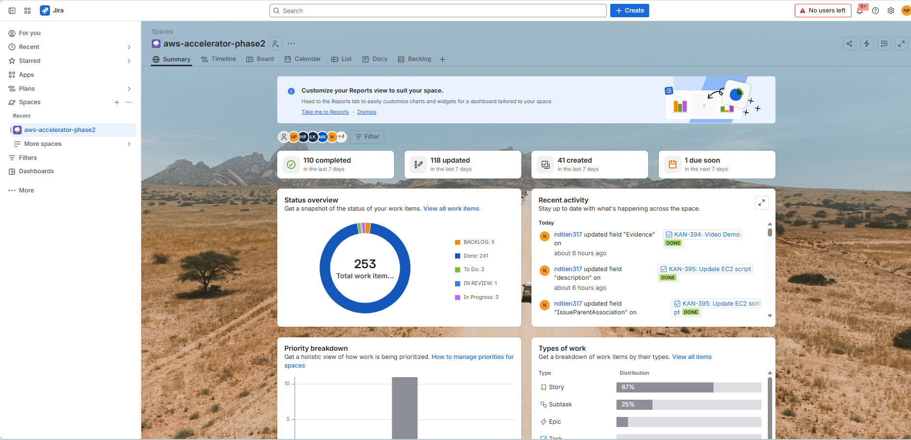
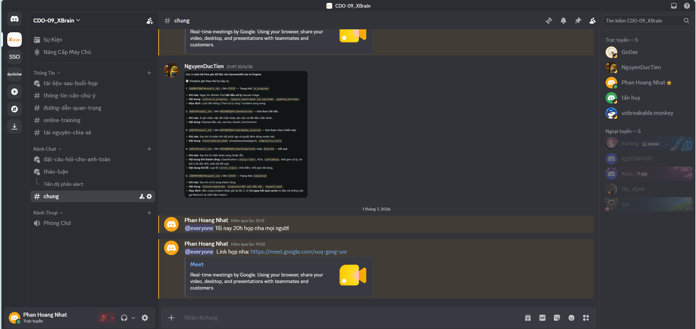
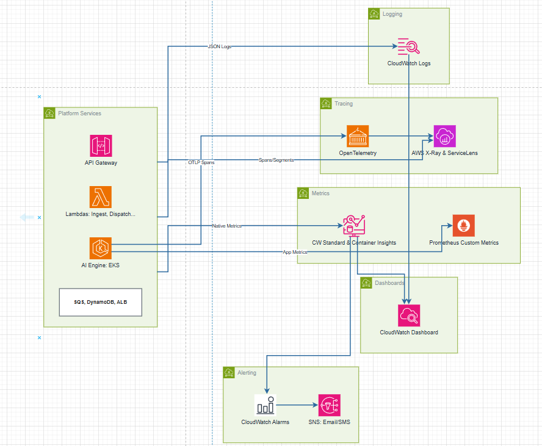
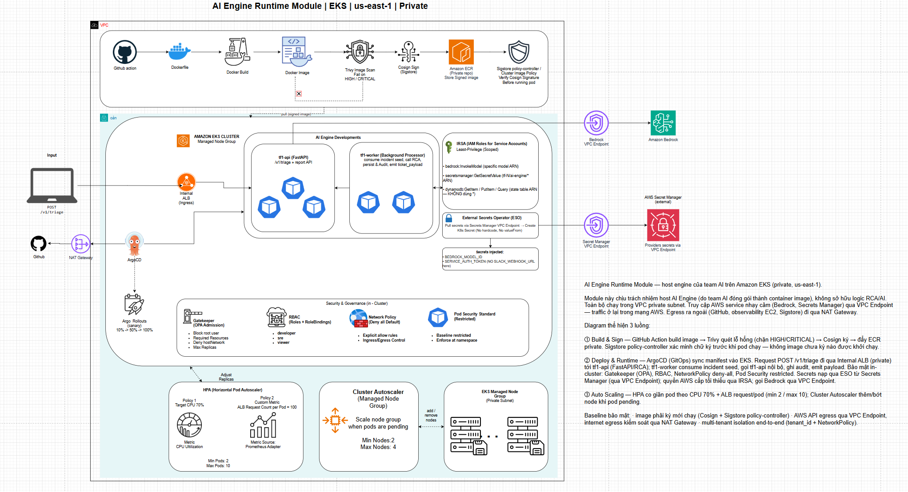
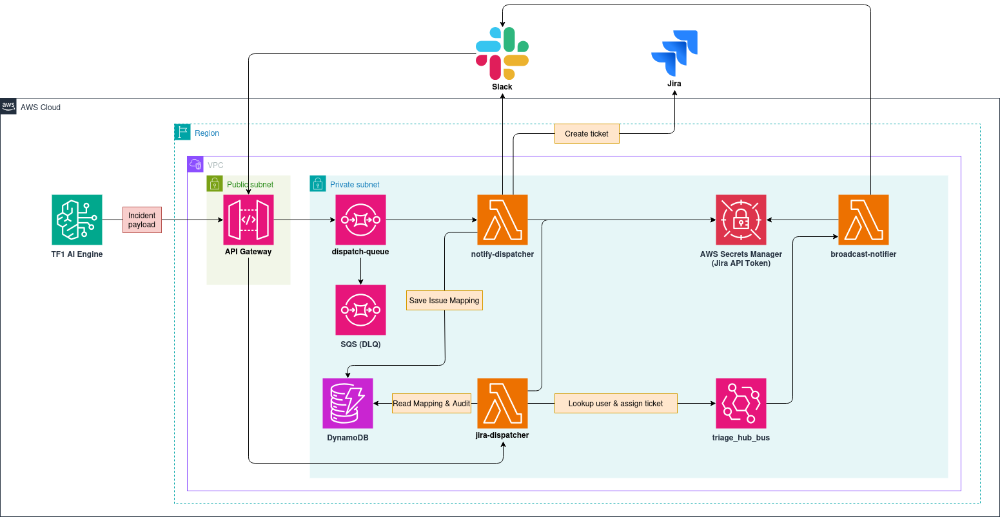

Sắp xếp theo thứ tự trình bày và vai trò của từng kỹ sư trong dự án.
Phương pháp phối hợp Agile, phân công công việc, giao tiếp và quản trị mã nguồn trong nhóm.
Nhóm thiết lập Sprint ngắn hạn 2 tuần trên Jira để quản lý backlog và phân tách nhiệm vụ rõ ràng:

Áp dụng quy tắc bảo mật code nghiêm ngặt trước khi đưa vào cluster:
main được bảo vệ (Protected Branch), cấm push trực tiếp.feature/* yêu cầu tối thiểu **1 code review** trước khi merge.
Duy trì kết nối liên tục để gỡ lỗi và giải quyết vấn đề tức thời:

Các yếu tố quyết định để chạy một AIOps Engine bền bỉ và bảo mật trên EKS.
AIOps Engine không phải là dịch vụ chạy LLM liên tục (high-throughput), mà hoạt động theo dạng **sự kiện đột xuất** (event-driven). Khi sự cố (Alert) xảy ra, hệ thống cần tài nguyên tức thời để:
Bảo đảm độ sẵn sàng (Availability) và khả năng sống sót cao của dịch vụ trong vùng mạng riêng tư.
tf1-api phân
tán trên các Node khác nhau.minAvailable: 1 để
Kubernetes luôn giữ ít nhất 1 Pod API hoạt động trong quá trình nâng cấp cluster hoặc bảo trì node.Cơ chế scale-out hạ tầng tự động để đối phó với cơn bão alert (Alert Storm).
Tự động nhân bản Pod tf1-api từ 2 lên tối đa 10 Pod dựa trên tải CPU sử dụng (Ngưỡng kích
hoạt: 70% CPU).
Pod tf1-worker (SQS consumer) tự động scale số lượng bản sao dựa trên độ dài hàng đợi tin
nhắn của AWS SQS, giải phóng nhanh nghẽn cảnh báo khi có biến cố lớn.
Khi pods rơi vào trạng thái Pending do thiếu hụt tài nguyên CPU/Mem của máy chủ, Cluster
Autoscaler tự động scale số lượng EC2 Node (Min: 2, Max: 10).
Sử dụng Kustomize Overlays để phân tách cấu hình Autoscaling theo môi trường nhằm kiểm soát ngân sách AWS:
Các lớp phòng thủ từ CI/CD cho tới thời điểm runtime trong Cluster.
SERVICE_AUTH_TOKEN (Bearer token).
Triển khai CloudWatch, Prometheus và OpenTelemetry để giám sát toàn diện hạ tầng và AI Engine.
triage-hub-dashboard (Health, Pipeline...).aiops.engine logger.
Dự toán ngân sách chi tiết dựa trên tải thực tế 1000 incident/tháng trên môi trường AWS.
| Hạng mục (Component) | Cấu hình tài nguyên chi tiết | Phân loại phí | Chi phí (USD) | Biện pháp tối ưu hóa |
|---|---|---|---|---|
| AWS EKS & EC2 Nodes | 1 Control Plane + 2x t3.large (us-east-1) + EBS gp3 |
Cố định (Fixed) | $197.20 / tháng | Đề xuất sử dụng Spot instances cho các workload không critical (~70% saving). |
| Networking & Connectivity | 1 ALB, 1 NAT Gateway, 2 VPC Interface Endpoints | Cố định (Fixed) | $63.45 / tháng | Sử dụng VPC Endpoints (Bedrock/SQS) định tuyến nội bộ, tránh phí data NAT Gateway. |
| Amazon Bedrock (Claude 3 Haiku) | Tải: 10,000 incident/tháng/tenant | Biến đổi (Variable) | ~$5.00 / tenant | Dùng model Haiku tối ưu chi phí (rẻ hơn Sonnet/Opus nhiều lần). |
| Serverless, Queue & Database | Lambda, API Gateway, SQS, DynamoDB On-demand | Biến đổi (Variable) | ~$0.08 / tenant | Bật SQS Batching và dùng DynamoDB On-demand xử lý tải đột biến. |
| Observability & Security | CloudWatch Logs/Dashboards/Alarms, Secrets Manager | Biến đổi (Variable) | ~$1.30 / tenant | Thiết lập vòng đời tự động xoá log (retention policy 30 ngày) giảm phí lưu trữ rác. |
| TỔNG CHI PHÍ DỰ KIẾN (Quy mô 10 Tenants / 100,000 Alerts) | $330.45 / Tháng | Trung bình: $33.05 / Tenant / Tháng | ||
| TỔNG CHI PHÍ DỰ KIẾN (Quy mô 50 Tenants / 500,000 Alerts) | $590.45 / Tháng | Trung bình: $11.81 / Tenant / Tháng (Amortized) | ||
Tổng hợp các điểm sáng nổi bật nhất về con người, hạ tầng kiến trúc và tài chính ngân sách.
Bảo mật chuỗi cung ứng hình ảnh, tự động hóa Canary Rollouts và cơ chế Autoscaling đa lớp.
tf1-api được deploy Canary (10% → 50% → 100%). Quy trình
AnalysisRun
giám sát liên tục p99 latency (<800ms) và error-rate 5xx (<1%) qua Prometheus để tự động
Rollback
nếu xảy ra sự cố.
hostNetwork/hostPID.
requests và limits tài nguyên để chống chiếm
dụng
khi dùng chung node (Noisy Neighbor).audit-only trước để kiểm tra
thực
tế, sau đó mới bật chặn cứng (enforce) để tránh gây outage bất ngờ.tf1-api: Scale theo CPU (70% HPA) và custom metric số lượng request/pod từ 2
đến 10
pods.tf1-worker: Scale bằng KEDA dựa trên độ sâu hàng đợi SQS (backlog depth: 5
messages/pod), vượt qua giới hạn của HPA thông thường khi có bão alert.tenant_id ngay trong Partition Key.Chi tiết sơ đồ kiến trúc triển khai và giải thích luồng xử lý tự động hóa của AI Engine.

Click vào ảnh để phóng to toàn màn hìnhPrometheus Alertmanager phát hiện sự cố, gửi cảnh báo đến hàng đợi AWS SQS để bảo vệ hệ thống trước bão alert.
Worker API tự động thu thập Logs từ Elasticsearch và Metrics từ Prometheus làm bằng chứng chẩn đoán (Evidence).
DynamoDB kiểm tra chữ ký sự cố. Nếu trùng lặp, trả ngay kết quả cũ (Fast Path) để tiết kiệm 100% chi phí gọi LLM.
Prompt Engine kết hợp dữ liệu gửi qua VPC PrivateLink lên Bedrock Claude 3.5 Sonnet để phân tích nguyên nhân gốc (RCA).
Ghi log audit vào DynamoDB, đẩy báo cáo tương tác lên Slack Block Kit và tự động tạo ticket Jira gán cho đúng SME.
Vận hành quy trình đóng gói, rà soát mã nguồn tự động và đồng bộ ArgoCD.
Mỗi lượt push code lên Git, workflow tự động chạy test unit, build docker image và quét lỗ hổng thư viện bằng Trivy.
Pipeline sử dụng OIDC token để xác thực với Cosign và ký số cho ảnh đĩa (ECR image) một cách an toàn không cần lưu giữ key.
Sử dụng Git Commit SHA ngắn làm tag cho image (e.g. :git-ac21f60). Khắc phục triệt để
lỗi
ghi đè tag cũ do chính sách ECR Immutable Tags.
ArgoCD liên tục theo dõi repository Git chứa các file manifest. Khi phát hiện tag image mới cập nhật trên Kustomization.yaml, ArgoCD tự động thực hiện deploy đồng bộ (Sync) kéo container image mới nhất về chạy trên cluster.
Chu trình di chuyển và phân tích dữ liệu khép kín từ Prometheus tới khi ra chẩn đoán.
API tiếp nhận payload chuẩn chứa incident_id, tenant_id,
alert_details. Trả về cấu trúc JSON thống nhất gồm: classification,
suspected_root_cause,
recommended_actions, và ticket_payload.
Dùng DynamoDB lưu trữ bảng IDEMPOTENCY#<id>. Khi nhận request bị trùng lặp do
retry
của hàng đợi SQS, API trả ngay kết quả cũ trong DynamoDB mà không gọi lại LLM Bedrock, tránh vỡ
budget.
Luồng dữ liệu end-to-end từ Alert → AI Engine → Slack → Jira.

Đưa AI insight đến tay kỹ sư vận hành ngay lập tức, khép kín vòng lặp phản hồi.
Root Cause, Confidence Score, Suggested Assignee đẩy trực tiếp vào Slack #oncall-<service>. Kỹ sư xử lý 1 click — không mở Jira, không tra log.
Mọi thao tác gán người là Ground-truth — AI học từ team, gợi ý chính xác hơn qua mỗi sự cố.
Ba bài toán kỹ thuật đặc thù khi tích hợp Slack & giải pháp serverless tương ứng.
Slack Block Kit payload bị giới hạn độ dài — không thể nhúng toàn bộ context vào button value.
Minify State (Tenant, Env, Service, Incident ID) vào block_id Slack Block Kit. Lambda stateless — scale ngàn request, zero Redis/DB.
Slack yêu cầu HTTP 200 trong 3 giây. Jira API assign ticket mất 4-5s — timeout chắc chắn.
Lambda jira-dispatcher dùng Self-Async Invocation: fork chính nó (InvocationType: 'Event'), trả 200 OK ngay. Background xử lý, update Slack qua response_url.
Amazon SQS (Buffer + DLQ) tách rời AI Engine khỏi notification. Không mất tin khi Alert Storm.
DynamoDB PK JIRA_HISTORY#<tenant>#<env>#<service> — AI truy vấn SME gợi ý trong ~5ms (O(1)).
Ticket không chỉ được tạo — nó tự tìm đúng chuyên gia và đúng Project Board ngay từ giây đầu tiên.
Quét dữ liệu lịch sử (JIRA_HISTORY#<tenant>#<env>#<service>) để tự động tìm ra SME thay vì tạo ticket rồi để trống chờ người nhận. Phân công đúng chuyên gia ngay ở giây đầu tiên.
Ticket tự động "bẻ lái" về đúng Project Board của từng nhóm (vd: PAY, TRIAGE) dựa trên ownership config jira_project gắn theo service — không sợ lọt dữ liệu chéo giữa các tenant.
Ba lớp phòng thủ chống trùng lặp khi Alert Storm và race condition xảy ra đồng thời.
Alert Storm bắn hàng trăm alert giống hệt nhau → nguy cơ tạo hàng loạt ticket rác, tê liệt team vận hành.
DynamoDB State Table lookup PK: TENANT#<tenant_id> / SK: INCIDENT#<incident_id> trước khi tạo. Ticket đã tồn tại → Skip Creation ngay lập tức.
2 Lambda cùng đọc DB tại một phần nghìn giây (Race Condition) → cả 2 đều thấy chưa có ticket và cùng gọi API tạo.
ConditionExpression: attribute_not_exists(PK) khi ghi mapping — transaction chỉ thành công nếu bản ghi chưa từng tồn tại, triệt tiêu hoàn toàn rủi ro Race Condition trong môi trường Serverless phân tán.
Request payload bắt buộc chứa tenant_id để map sang đúng project_key của Jira.
JIRA_API_TOKEN không hard-code — kéo động từ AWS Secrets Manager (Lambda) hoặc External Secrets Operator (EKS).
Báo cáo kết quả thử nghiệm 3 kịch bản lỗi mẫu E2E và ma trận kiểm thử 735 cases.
| Chế độ Triage (Mode) | Tài nguyên nhãn | AI Bedrock | Accuracy | Macro F1 | Độ trễ trung bình (Latency) |
|---|---|---|---|---|---|
| Conservative Lower Bound | Ẩn toàn bộ Alert info | Tắt | 62.45% | 48.11% | 0.47 ms |
| Production-like Metadata | Đầy đủ nhãn ngữ cảnh | Tắt | 89.66% | 81.03% | 0.45 ms |
| AgentCore Sample Run | Ẩn toàn bộ Alert info | Bật | 93.33% | 93.27% | 2,138.69 ms |
| AgentCore + Metadata Sample | Đầy đủ nhãn ngữ cảnh | Bật | 93.33% | 93.27% | 2,162.09 ms |
checkout sập DB connection →
Deterministic
phân loại chính xác critical_service_down (100% test pass).
payment-api phản hồi 3.5s → Bedrock AgentCore trace ngược phát hiện Stripe API bị chậm.
auth-service CPU spike chớp nhoáng →
Thuật
toán Z-Score lọc tín hiệu nhiễu, gán status INVESTIGATE.
Xin chân thành cảm ơn Ban Giám Khảo, Mentor và các Kỹ sư đồng nghiệp đã lắng nghe!